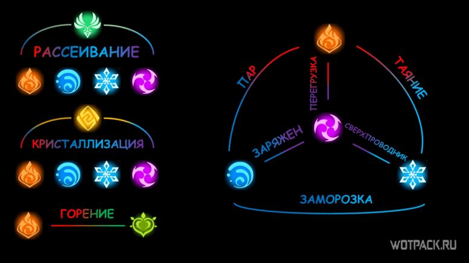
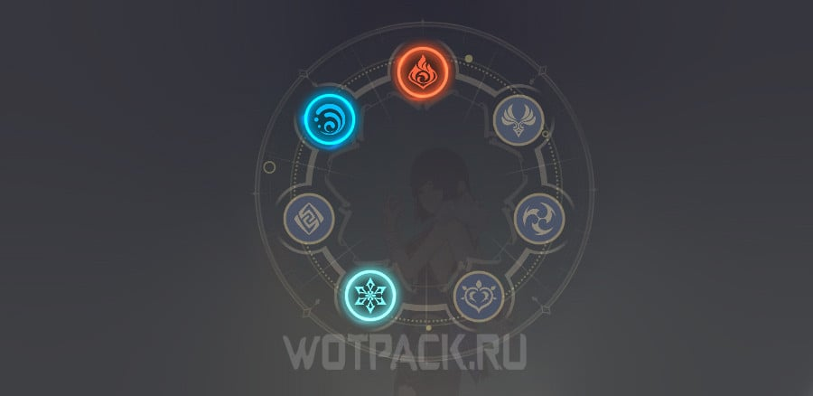

Главная
Реакции
Лунные
Элементальные реакции в игре реакции в игре “Genshin Impact”
Элементальные реакции – взаимодействия двух или более элементов. Стратегия боя напрямую зависит от взаимодействия разных стихий. Особыми эффектами обладают как пара персонажей с разной элементальной принадлежностью, так и представители одного элемента. Только знание всех сочетаний позволит развить максимальный показатель урона, вносимого по противникам.

Элементальные реакции делятся на:

Информация взята с: